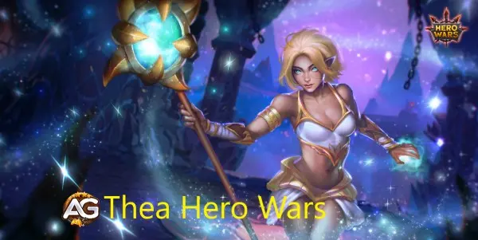
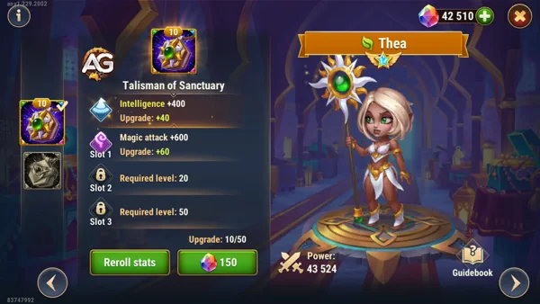
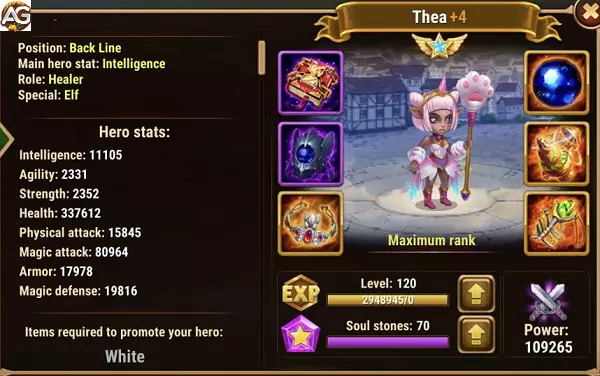

No reino em constante evolução de Hero Wars Alliance, cada herói apresenta um conjunto distinto de habilidades, adicionando profundidade e complexidade ao campo de batalha. Entre eles, Thea surge como uma curandeira versátil, capaz de mudar o rumo da batalha com suas poderosas habilidades de suporte.
Embora muitas vezes seja ofuscada por escolhas mais populares nas formações de final de jogo, seu potencial de cura e utilidade a tornam um recurso inestimável em vários cenários estratégicos. Compreender suas habilidades e como maximizar seu impacto pode fazer uma diferença significativa, especialmente na fase intermediária do jogo ou em composições específicas.
As habilidades únicas de Thea vão além de seu papel principal como curandeira. Sua capacidade de silenciar inimigos, combinada com sua cura direcionada, permite que ela contribua tanto para estratégias ofensivas quanto defensivas. Embora ela possa não dominar nas formações de meta de alto nível, Thea se destaca em situações que exigem cura consistente e controle tático de multidões.
Posicioná-la corretamente em uma equipe pode amplificar suas forças, tornando-a uma aliada crucial contra certos adversários. Explorar seu conjunto de habilidades e experimentar diferentes configurações é a chave para desbloquear todo o seu potencial.
Revelando Thea: Visão Geral do Personagem e Tier List Geral
Atributos Principais
Posição:
Linha de Fundo
Função:
Curandeira
Principal Estatística:
Inteligência
Facção:
Natureza
Como Obter Pedras de Alma:
Eventos, Baú Heroico, Capítulo 2, 4, 7
Tier List 2025
Tier List Geral:
B
Tier List de Hidra:
A

Ilustração de Thea, um personagem do jogo Hero Wars Alliance, desenvolvido pela Nexters.
Entendendo o Papel de Thea:
Antes de mergulharmos em estratégias, é essencial reconhecer o papel de Thea dentro da composição de sua equipe. Embora ela possa não ser tão proeminente quanto Martha, outra curandeira no jogo, Thea ainda oferece utilidade e suporte valiosos.
Conjunto de Habilidades de Thea:
Solar Sanctuary:
O primeiro talento de Thea, Solar Sanctuary, é um benefício para a sobrevivência de sua equipe. Ele cura todos os membros, fornecendo uma quantidade substancial de regeneração de vida com base no Ataque Mágico de Thea e no nível de habilidade.
Healing Beam:
Com Healing Beam, Thea direciona sua cura para o aliado com menos vida, oferecendo cura direcionada para manter sua equipe na luta. A potência dessa cura aumenta com o Ataque Mágico de Thea e o nível de habilidade.
Vow of Silence:
Vow of Silence é a ferramenta de interrupção de Thea, silenciando inimigos por uma duração significativa. Esta habilidade não apenas neutraliza a conjuração de feitiços inimigos, mas também causa dano com base no Ataque Mágico de Thea e no nível de habilidade.
Second Wind:
Second Wind complementa as habilidades de cura de Thea, aumentando a velocidade de habilidade dos aliados curados. Esse buff permite que sua equipe desencadeie suas habilidades com mais frequência, dando uma vantagem estratégica em batalhas prolongadas.
Estratégias para Thea:
Sinergia com Jhu:
Uma das qualidades marcantes de Thea é sua capacidade de acelerar a velocidade de habilidade dos heróis aliados em 50% sempre que os cura. Essa sinergia combina excepcionalmente bem com heróis como Jhu, especialmente em batalhas contra chefes de Hidra. A fúria final de Thea não apenas cura a equipe, mas também acelera a velocidade de habilidade deles, permitindo ataques implacáveis ao inimigo.
Disrupção e Utilidade:
Embora Thea possa não se destacar como curandeira principal, seu Vow of Silence fornece controle de grupo valioso ao silenciar inimigos. Isso pode interromper estratégias inimigas e criar aberturas para sua equipe capitalizar. Além disso, seu Healing Beam garante que aliados críticos permaneçam na luta, mitigando ameaças potenciais.
Implantação Estratégica:
Ao incorporar Thea em sua equipe, considere os desafios específicos que enfrentará em cada batalha. Seu conjunto de habilidades versátil permite adaptabilidade em vários cenários, desde engajamentos prolongados até encontros focados em explosão. Entender quando utilizar cada uma de suas habilidades pode ser a diferença entre a vitória e a derrota.
Análise Comparativa dos Talismãs da Thea em Hero Wars Alliance
Thea, se beneficia enormemente de seus talismãs, que aprimoram suas capacidades de cura e sobrevivência. Abaixo está uma análise comparativa de dois de seus talismãs: o Talismã do Santuário e o Talismã da Curandeira. Cada talismã oferece vantagens únicas que atendem a diferentes estilos de jogo. Também fornecemos uma tabela comparativa detalhada para ajudá-lo a decidir qual talismã melhor se alinha com sua estratégia.
Talismã do Santuário
O Talismã do Santuário concede à Thea 2000 pontos de inteligência, que aumentam diretamente suas capacidades mágicas. Cada ponto de inteligência fornece:
3 pontos de ataque mágico (totalizando 6000 pontos).
1 ponto de defesa mágica (totalizando 2000 pontos).
Além disso, este talismã oferece 3 slots de ataque mágico, cada um podendo atingir até 6500 pontos com rerolls. O ataque mágico aprimora todas as habilidades de cura da Thea, tornando-a uma heroína de suporte ainda mais eficaz em batalhas.

Thea com o Talismã do Santuário, Hero Wars Alliance.
Talismã da Curandeira
O Talismã da Curandeira foca no aumento da sobrevivência e do potencial de cura da Thea. Ele fornece:
Robustez: Reduz todo o dano recebido dos inimigos quando a vida da Thea está baixa. Esse efeito se aplica a todos os tipos de dano (físico, mágico e puro), exceto perda de vida causada por habilidades aliadas.
Slots de Vida: Inclui 3 slots de vida, cada um podendo atingir até 60.500 pontos com rerolls, aumentando significativamente sua durabilidade geral.
Esse talismã é ideal para jogadores que desejam garantir a sobrevivência da Thea em momentos críticos, permitindo que ela continue curando sua equipe mesmo sob forte ataque inimigo.
Tabela Comparativa
Característica
Talismã do Santuário
Talismã da Curandeira
Impulso de Atributo Principal
2000 Inteligência
N/A
Benefícios da Inteligência
6000 Ataque Mágico, 2000 Defesa Mágica
N/A
Slots Adicionais
3 Slots de Ataque Mágico (até 6500 cada)
3 Slots de Vida (até 60.500 cada)
Efeito Especial
N/A
Robustez (reduz dano recebido quando a vida está baixa)
Melhor Para
Aprimorar habilidades de cura e ataque mágico
Aumentar a sobrevivência e durabilidade
Ambos os talismãs oferecem vantagens únicas, dependendo do seu estilo de jogo preferido. Se seu objetivo é aprimorar as habilidades de cura e o ataque mágico da Thea, o Talismã do Santuário é a escolha ideal. No entanto, se você deseja focar no aumento da sobrevivência e garantir que ela continue curando em momentos críticos, o Talismã da Curandeira é a melhor opção.
Pontos Positivos e Negativos de Thea
Pontos Positivos
Curandeira
Silencia inimigos por 4 segundos
Cura e aumenta a velocidade de habilidade do aliado em 50% por 4 segundos
Pontos Negativos
A cura não é suficiente
Precisa de muito nível para curar o suficiente
Evolução Estratégica para Thea em Hero Wars Alliance
Thea, embora não seja tão proeminente quanto outros heróis, pode desempenhar um papel crucial em sua equipe quando evoluída estrategicamente. Aqui estão algumas sugestões para priorizar glifos, artefatos e skins para maximizar o potencial de Thea:
Prioridade de Glifos:
Ataque Mágico: Aumentar o poder mágico de Thea é crucial para aprimorar a eficácia de suas habilidades de cura e dano.
Vida: Aumentar a Vida de Thea ajuda a garantir sua sobrevivência no campo de batalha, permitindo que ela continue curando sua equipe.
Armadura: Aumentar a armadura de Thea pode ajudá-la a resistir a ataques físicos, tornando-a mais resiliente contra certos inimigos.
Inteligência: Aumentar a inteligência de Thea pode melhorar sua habilidade de cura e aumentar o dano de suas habilidades.
Defesa Mágica: Embora menos prioritária do que outros glifos, aumentar a defesa mágica de Thea pode ser útil contra equipes com foco em habilidades mágicas.
Prioridade de Artefatos:
Livro: Priorizar o livro aumentará ainda mais o poder mágico de Thea, fortalecendo suas habilidades de cura e dano.
Anel: O anel pode oferecer benefícios adicionais de resistência e ataque mágico, aumentando a durabilidade de Thea no campo de batalha.
Arma (Defesa Mágica): Uma arma que aumente a defesa mágica de Thea pode ser útil para enfrentar equipes com alto dano mágico.
Prioridade de Skins:
Vida: Priorizar skins que aumentam a vida de Thea pode melhorar sua resistência e durabilidade.
Ataque Mágico: Aumentar o poder mágico de Thea melhora tanto sua capacidade de cura quanto seu dano.
Inteligência: Aumentar a inteligência de Thea pode melhorar ainda mais suas habilidades de cura e dano.
Armadura: Aumentar a armadura de Thea pode torná-la mais resistente a ataques físicos, melhorando sua sobrevivência.
Ao priorizar esses atributos em glifos, artefatos e skins, você pode transformar Thea em uma peça valiosa de sua equipe em Hero Wars Alliance, maximizando seu potencial como suporte e curandeira.

Thea com skin de mascarada, Hero Wars Alliance.
Thea vs Hidra
Thea é uma ótima personagem contra hidras, sua quarta habilidade roxa faz Thea acelerar seus aliados toda vez que os cura, então é uma boa combinação com Jhu e Mojo para causar mais dano às hidras do Hero Wars; essa combinação é uma das melhores contra hidras de fogo; a cada 11 segundos ou sempre que ela recarregar energia Thea irá curar Jhu e acelerar em 50%.
Sugestão de equipe de Thea para Hidra: Thea, Mojo, Jhu, Tristan, Astaroth
Thea em Batalhas
Fortes Contra
Hidras, principalmente contra Hidra de Fogo acelerando Jhu
Embora Thea possa não ser a escolha mais popular em equipes de final de jogo, suas qualidades únicas a tornam um recurso valioso em certas estratégias. Ao entender suas forças e sinergias, você pode maximizar seu potencial como curandeira e controladora de grupo em Hero Wars Alliance.
Você gostou das nossas dicas do Guia da Thea? Há algo que não entendeu ou gostaria de sugerir mudanças? Convidamos você a se juntar à nossa sessão de comentários na página do Alexandre Games Blog. Não hesite em expressar sua opinião, clarificar suas dúvidas e compartilhar sua sugestões. Clique no botão abaixo para começar:

 Martha
Martha